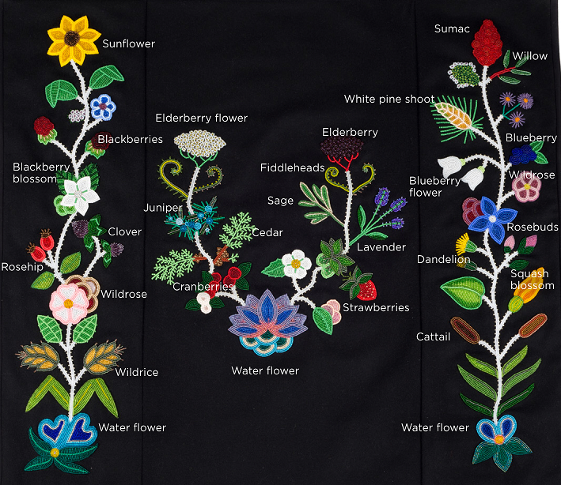

Before European conntact many indigenous tribes used dyed quills in the artwork instead of beads this is known as quillwork. The Anishinaabe mainly got their beads by trading felts with the French for their beads. The Anishinaabes beadwork is mostly abrstact style floral because of thee woodland enviroment they live in unlike the more geometric style beadwork of the Sioux.
